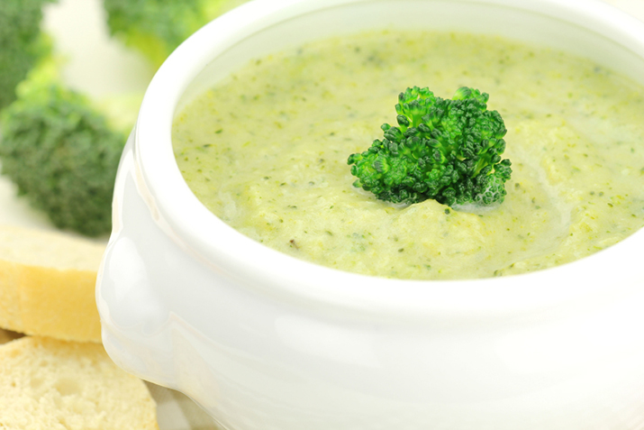

Creamy Broccoli Soup
Recipe
Creamy broccoli soup is one of the most manufactured soups today, and that is not too surprising considering how delicious it is! We do however recommend that you always (if you can) to make this dish at home instead, as you can accomodate for your tastes and it's fresh. We will now discuss how to make this soup. Before we begin, you can find the ingredients list below. Start by melting 2 tablespoons of butter in a medium pot over medium heat. You will saute the onions and celery until they are tender before adding in in the broccoli. Once that is done, we can add the broccoli and broth, covering it for 10 minutes to simmer. Once you've done this, pour the mix into a blender and make sure to not fill the pitcher to full, rather half way. Next, melt 3 more tablespoons of butter in a small pan over medium-low heat. Stir in the flour and milk until thick. Finally add the soup, seasoning with black pepper before serving.
- 5 tablespoons of butter, divided
- 1 onion, chopped
- 1 stalk celery, chopped
- 3 cups of chicken broth
- 8 cups of broccoli florets
- 3 tablespoons of all-purpose flour
- 2 cups of milk
- Ground pepper to taste
This recipe is best made during the more colder and darker winter months, with some bread on the side, it makes a great lunch or even dinner. We hope you enjoyed this article and let us know the result of your soup! Here are two other recipes we highly recomemend. Cookie+Kate's & Jamie Oliver
